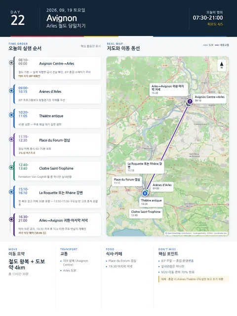

Day 22 · 9/19 토 · Avignon
- 핵심 실행
- Arles 철도 당일치기
- 권장 출발
- 열차 기준 역산
- 완충
- 열차 20분 전·점심/카페 90분
시간표
| 시간 | 일정 | 실행 포인트 |
|---|---|---|
| 07:30–08:10 | 숙소 아침 | 9/20 이동 준비를 70% 완료 |
| 08:10–09:00 | Avignon Centre→Arles | 철도 기본, 실제 직행편·공사 전날 확인 |
| 09:00–10:15 | Arènes d’Arles | JEP 프로그램보다 원형경기장 자체를 우선 |
| 10:20–11:05 | Théâtre antique | 45분 상한, 무료 해설 대기 길면 생략 |
| 11:15–12:30 | Place du Forum·구도심 점심 | 점심·카페 휴식 60–75분 보호 |
| 12:40–13:40 | Cloître Saint-Trophime | Fondation과 둘 중 하나만 실내관람 |
| 13:50–15:00 | 구도심·반 고흐 흔적 | 장소 수집보다 실제 광장·거리 관찰 |
| 15:10–16:10 | La Roquette 또는 Rhône 강변 | 한 축만 걷고 카페 30분 포함 |
| 16:30–17:30 | Arles→Avignon 귀환 | 막차 의존 금지, 지연 시 산책 축소 |
| 19:30–21:00 | 마지막 저녁 | Restaurant SEVIN 특별식 또는 Le Goût du Jour·Cocottes |
| 21:00 이후 | 짐 정리 | TGV 티켓·렌터카 영수증·주유·반납지 재확인 |
피로도
4/5
이 날의 장소
Arles 필수Arènes d’Arles 필수Cloître Saint-Trophime 우선 추천La Roquette 우선 추천Place du Forum 우선 추천Théâtre antique 필수
일자별 시간표와 본문 표기에서 찾은 것이다. 하루의 전부가 아니라 장소 카드가 있는 것만 담는다.
이 날의 메모
Arles — 로마유적·중세·반 고흐·생활도시
로마 유적·중세 회랑·반 고흐의 기억·생활 골목을 하루 도보권에서 잇는다. 사진은 출처·저작자·라이선스를 확인한 적법한 자산을 확보할 때만 추가한다.
오늘 실행표
문화유산의 날 혼잡과 고대유적 계단이 변수다.
선택 대안 — Les Baux·Saint-Rémy·Glanum
아래 정보는 Arles를 완전히 교체할 때만 사용하며 같은 날 결합하지 않는다. 풍경을 우선하면 Les Baux와 Saint-Rémy를 잇고, Glanum 또는 Carrières des Lumières 가운데 하나만 고른다. 상세 판단 기준은 지역 챕터의 선택 대안 — Alpilles 절에 보존한다.
상세 실행 확인
- 최고 리스크
- JEP 혼잡·운영변동·소매치기
- 우선 삭제
- 선택시설·강변 연장
- 대체안
- Arènes·Théâtre·구도심만
- 식사·휴식
- Place du Forum 인근
- 잠금 필요
- TER·JEP 재확인
Daily Action Map

실제 좌표와 OpenStreetMap을 사용한 실행용 요약입니다. 도로·대중교통 상황은 출발 직전에 다시 확인하세요.